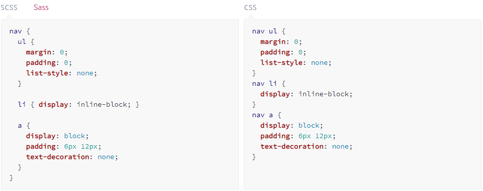

Вложенности/Фрагментирование
При написании HTML, Вы, наверное, заметили, что он имеет четкую вложенную и визуальную иерархию. С CSS это не так.
Sass позволит вам вкладывать CSS селекторы таким же образом, как и в визуальной иерархии HTML. Но помните, что чрезмерное количество вложенностей делает ваш документ менее читабельным и воспринимаемым, что считается плохой практикой.
Чтобы понять что мы имеем ввиду, приведем типичный пример стилей навигации на сайте:
Вы заметили, что селекторы ul, li, и a являются вложенными в селектор nav? Это отличный способ сделать ваш CSS-файл более читабельным. Когда вы сгенерируете CSS-файл, то на выходе вы получите что-то вроде этого:
Фрагментирование
Вы можете создавать фрагменты Sass-файла, которые будут содержать в себе небольшие отрывки CSS, которые можно будет использовать в других Sass-файлах. Это отличный способ сделать ваш CSS модульным, а также облегчить его обслуживание. Фрагмент — это простой Sass-файл, имя которого начинается с нижнего подчеркивания, например, _partial.scss. Нижнее подчеркивание в имени Sass-файла говорит компилятору о том, что это только фрагмент и он не должен компилироваться в CSS. Фрагменты Sass подключаются при помощи директивы @import.
Прошлый урок
Следующий урок